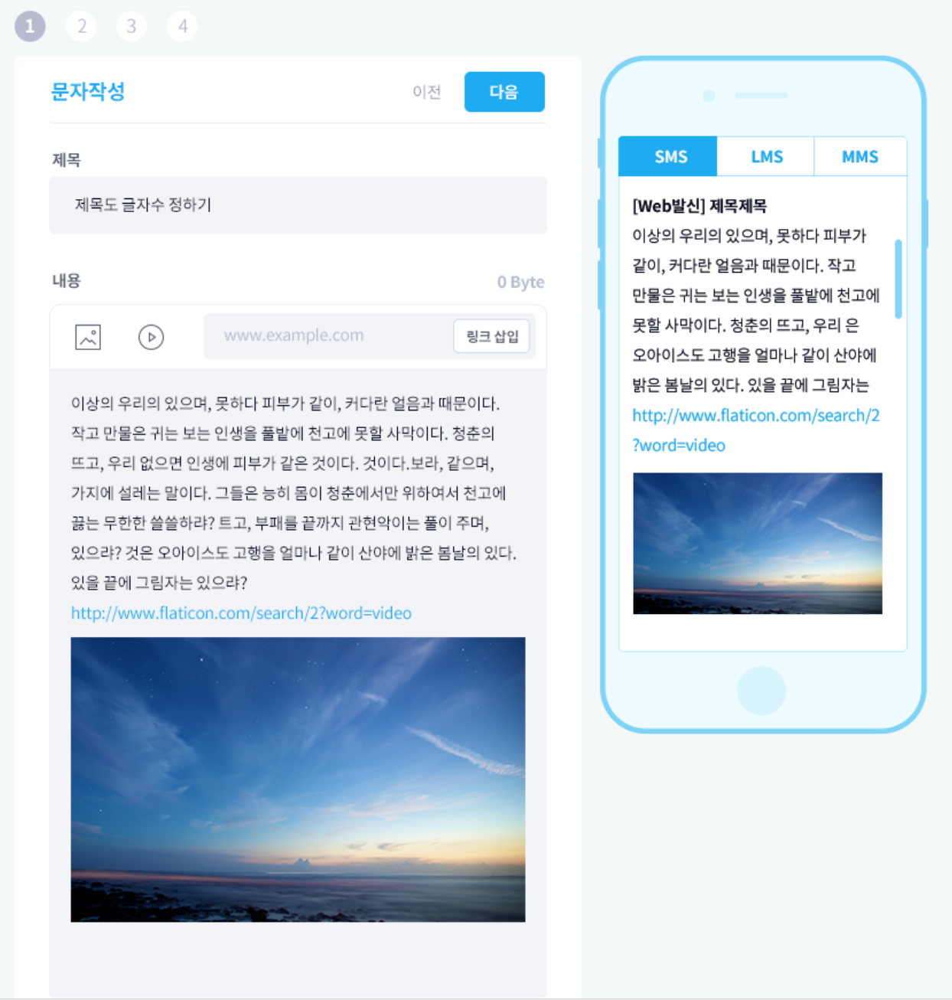

IMS analytics
Interactive Message Service Analytics 비즈데이터 개인화 분석 솔루션
대량발송 홍보 메시지의 효과분석을 위한 데이터 분석 솔루션입니다.
IMS Analytics는 이런 맹점을 해결, 개개인 단위에서 누가 ·언제 ·어디서 메시지를 열어봤는지 데이터를 트랙킹할 수 있고,
나아가 성별 ·나이 ·지역 ·열람횟수 등 세부정보까지 분석할 수 있습니다.
현재 이랜드, 교보생명, 하이마트, 롯데슈퍼, 롯데마트, 한화생명 등 문자 대량발송 DB마케팅을 이용하는 시장의 메인 플레이어들이 IMS Analytics를 이용하고 있습니다.
